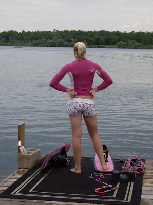
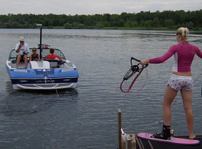
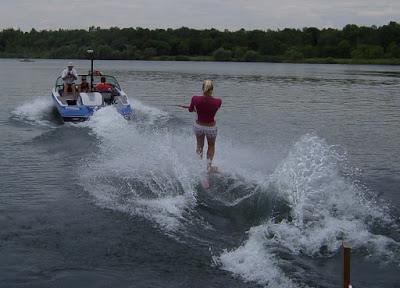

|
Competitive waterskiing trick event (short board) consists of two 20 second passes, a total of 40 seconds, in which the skier performs as many different tricks as possible. Each trick has a point value based on its difficulty. The following is a sequence from Canadian Championships in 2011. This is Whitney McClintock who had a solid trick event and together with her other two events, slalom and jump, was able to break the world record for overall point total. Later in 2012 the overall score record was broken again by another skier. Competition is fierce at this level! To the lay person, the tricks go by so fast that it is all a blur. Just like listening to a new language: at first all the words seem to fuse together in one big noise. After a while, you are able to distinguish the beginning and end of words, and later the meaning as well. Learning to "see" a sport is the same. At first all we see is one movement, and with repeated viewing, are able to distinguish different elements. Now I will take you through Whitney's trick event at the 2011 Nationals which took place in Newmarket Ontario, because I just happen to have a few good pictures and videos of this event. I am working the starting dock, and now Whitney is ready to go next. She is now visualizing her run. We'll be quiet and let her do that... but we can look at the equipment. She has two trick skis. One is for her "toe pass" and one is for her "hand pass". In the picture below, she has placed her foot on her Toe pass board. It has a hard boot and binding like we use for downhill skiing. The Toe pass requires her to have one foot in a harness which is attached to the ski handle, so she is holding on with her foot and not her hands; hence the name "toe pass". The hard boot gives her stability and control over how the ski slides in all directions over the water. The other ski sitting on its side is the Hand pass ski. Both her feet are in bindings that are permanently attached to the ski. She does many flips which are aggressive. A regular release binding releases prematurely. The boots are softer which offer less support, but more control over ankle movements required for the aggressive jumping. The flip ski also has a more rugged bottom for traction in the landings and the edges are filed for optimal edging. The rope is specialized in length to her favorite spot between the boat wakes, and it is like a wakeboard rope, which is more like a cable that does not stretch. At this level it is absolutely required for safety. To aggressive skiers a regular waterski rope into a "rubber band". Recreational skiers are not aggressive enough for this to happen. (World record capability slalom ropes also have nonstretch fibers woven into them. These very expensive and not sold in regular sports stores.) There is a cinder block and a weight on the dock. These are used to balance the boat if needed. Skiers want the wakes behind the boat symmetrical and as well the boat runs better when properly balanced. There is a spray bottle in the cinder block. This has biodegradable lube that some skiers need to get their bindings on. Finally, the carpet Whitney is standing on is put there, not because of royalty status, but because we like to treat our skis royally, and not get them scratched on the dock! 
Now Whitney is ready to do her run. The boat is idling out and we see the driver, in red, the boat judge in the hat who has a camera, and on top of the pole is also a camera. The main trick judges view the video feeds, so they don't see the skier live. They can play back any part of the run to ensure accuracy of judging. In the middle is Whitney's coach, Matt Rini. Here we can see more clearly Whitney's downhill boot and binding attached to the trick ski. As well we can see the harness she will put her foot into, which is located right under the ski handle. As well, notice that the trick rope has a thick braid, a meter long, at the handle. Sometimes it is too awkward to hold onto the handle to initiate a trick, so Whitney just grabs the rope instead. She is going to do her Toe pass which requires her free foot to be attached to the harness. If she falls, the rope must be unattached from the boat. This is what Matt is doing. It's called "pinning" because of an old method of doing this on a pin attached to the ski pylon. For safety reasons, most skiers prefer to have the "pinner" do this manually, ensuring the rope leaves the boat without hesitation. A small 2 foot rope is permanently attached to the pylon. It passes through the end loop of the trick rope and then held by the pinner. 
And she's off...When the rope is taught, Whitney steps off the dock as the boat accelerates. Although it looks fancy, it's the easiest way.
The first pass is the "Toe pass". As the video starts, she is already "set up". Her foot is in the harness, and she has wrapped the ski rope around her, so all she has to do for her first trick is unwind, like a top. She starts with two "surface turns". This means that you are rotating ontop of the surface of the water. A "7" (720 degree revolution, two continuous turns) and a "5" (540 degree revolution - one and half continuous turns). Then she does two "wake turns". This means that are rotating in the air. To get into the air, skiers jump off the boat wake. She does "back-to-backs", meaning that she starts her trick with ski facing backwards, and ends her trick with ski facing backwards, so she has to turn the ski 360 degrees in air to do this. She starts in "toe reverse back" and lands in "toe back". A toe back is the natural turn backwards where the harness leg extends naturally towards the boat. However the reverse back is very awkward. The harness leg does not extend towards the boat. It has to wrap around the outside of the skier first! It looks nice when its done right though. So that's the foundation of "toe tricks". All other tricks are built on these core motions. The next set of tricks she does are surface turns again. This part Whitney is tweaking, finding which set of surface turns has more points and gets her properly balanced for her final tough tricks. Then at the 13 second mark of the video she starts with a "toe wake 0". She is set up "wrapped in" so all she has to do is unwind like a top, but this time in the air. To initiate the trick she grabs the rope braid and pulls in to help her turn the 360 degrees in the air. Then she does a 360 degree spin in the air, but this time her ski passes over the rope as well. A bit scary. And difficult. Getting the power to pull herself towards the boat and up in the air so the ski can pass over. Then landing balanced ready to receive a big jolt because the pull forward creates big slack. It takes a while for the rope to be taught again, and when it does, there is a big jolt. This trick is called a "toe line 0". "Toe" means the foot is in the harness. "Line" means that the ski passes over the ski rope line. And "0" means that its a 360 degree rotation. Then she does another "toe line" trick, and then ends off her run with a few simple surface turns. The second pass is the "Hand pass". She starts with a few spins in the air. They are both one and a half revolutions, called "wake 5s". Notice she starts in the "back wrap" position. The judges are only concerned about which way the ski is pointing. Skiers simply twist their lower body to turn the ski backwards. This means less shoulder rotation is required to turn, making the trick quicker, and often easier. Then she lands in a "front wrap" position. Also a trick of the trade. She has wrapped the rope around her body. This way she does not have to do extra body motions to move the rope around her body. Again saving time and energy. Then she jumps over the rope while turning around. This is called a "wake line 0". Then some more quick "wake tricks", "wake 0s" which means 360 degree spins in he air. Finally she does her "flip sequence". Flips are bigger tricks, requiring more time to complete, so they are easier to read for the new viewer. She starts with the back flip in one direction and then its reverse, the other direction. Then she does the flips again, but landing in the back, opposite, direction. And finally she start her flip backwards and ends backwards. In the end she swishes the ski backwards and forwards on the surface of the water for extra points. Every point bit helps at this level. So that's it. I've described some foundational things to look for in world level trick skiing. Viewing repeatedly will reveal more, like gait and timing. I've always enjoyed watching technical details of top level skiers. There's always something interesting and beautifully correct that pops up. by Anda Vitols - July 2012 Waterski Home |